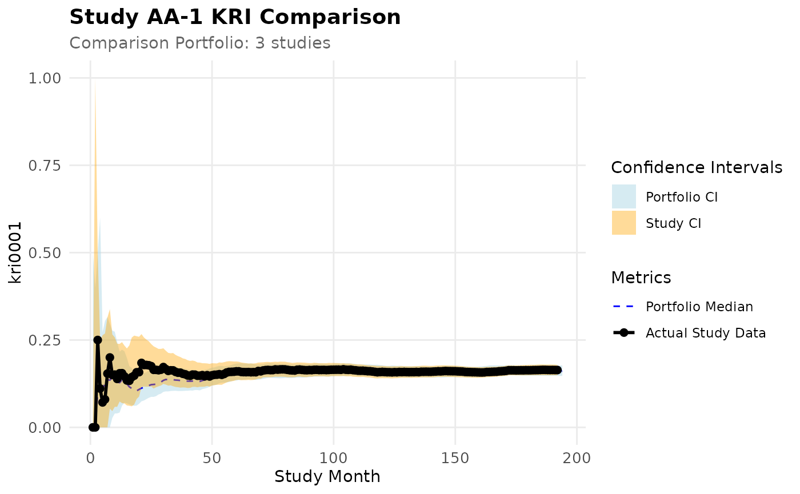
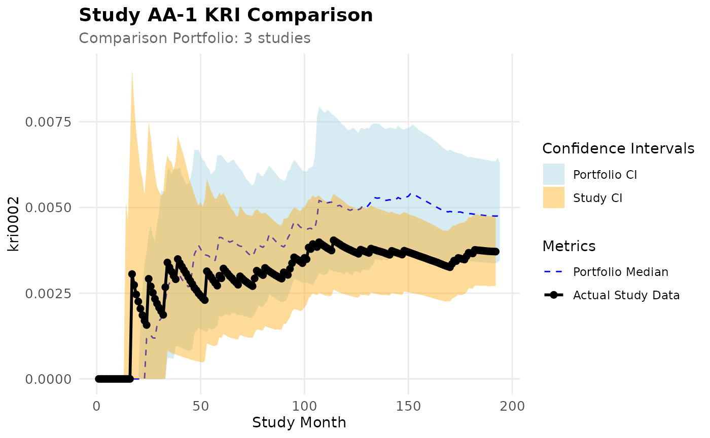
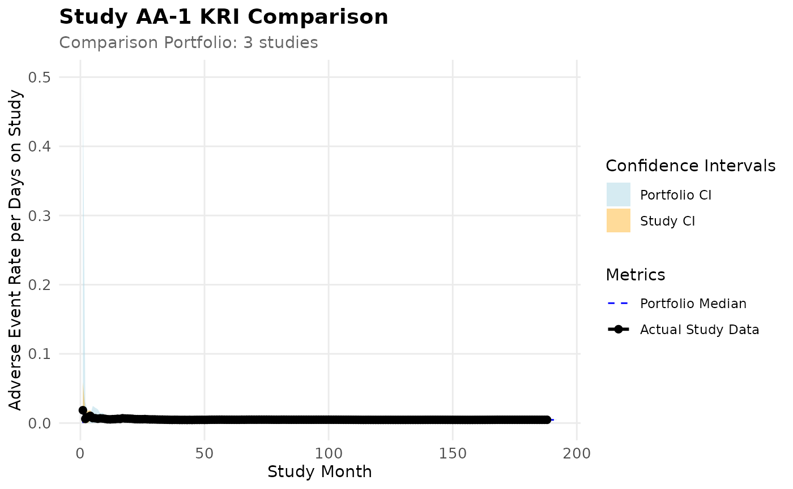

In-Database Compatibility
db.RmdLoad
suppressPackageStartupMessages(library(dplyr))
library(gsm.core)
library(gsm.mapping)
library(gsm.kri)
library(gsm.reporting)
library(gsm.studykri)
#>
#> Attaching package: 'gsm.studykri'
#> The following object is masked from 'package:gsm.reporting':
#>
#> BindResultsIntroduction
{gsm.studykir} functions can be executed on a database back-end instead of relying on in-memory calculations
Simulate Data Set and Save to DuckDb
We use the clindata package which includes data from one clinical study to simulate new study data. We create a portfolio with study AA-4 oversampling patients with low AE counts.
lRaw <- list(
Raw_SITE = clindata::ctms_site,
Raw_STUDY = clindata::ctms_study,
Raw_PD = clindata::ctms_protdev,
Raw_DATAENT = clindata::edc_data_pages,
Raw_DATACHG = clindata::edc_data_points,
Raw_QUERY = clindata::edc_queries,
Raw_AE = clindata::rawplus_ae,
Raw_SUBJ = clindata::rawplus_dm,
Raw_ENROLL = clindata::rawplus_enroll,
Raw_Randomization = clindata::rawplus_ixrsrand,
Raw_LB = clindata::rawplus_lb,
Raw_SDRGCOMP = clindata::rawplus_sdrgcomp,
Raw_STUDCOMP = clindata::rawplus_studcomp,
Raw_IE = clindata::rawplus_ie,
Raw_VISIT = clindata::rawplus_visdt %>%
mutate(visit_dt = lubridate::ymd(visit_dt))
)
# Add required subject identifier columns for resampling
lRaw$Raw_SUBJ$subjectname <- lRaw$Raw_SUBJ$subject_nsv
lRaw$Raw_SUBJ$subjectenrollmentnumber <- lRaw$Raw_SUBJ$subjid
lPortfolio <- SimulatePortfolio(
lRaw = lRaw,
nStudies = 4,
vSubjectIDs = c("subjid", "subjectenrollmentnumber", "subject_nsv", "subjectname", "subjectid"),
dfConfig = tibble(
studyid = c("AA-1", "AA-2", "AA-3", "AA-4"),
nSubjects = c(500, 750, 150, 200),
strOversamplDomain = rep("Raw_AE", 4),
vOversamplQuantileRange_min = c(0, 0, 0, 0),
vOversamplQuantileRange_max = c(1, 1, 1, 0.75)
)
)
con <- DBI::dbConnect(duckdb::duckdb(), ":memory:")
purrr::walk2(names(lPortfolio), lPortfolio, ~ DBI::dbWriteTable(con, .x, .y))
dbPortfolio <- purrr::map(names(lPortfolio), ~ tbl(con, .x))
names(dbPortfolio) <- names(lPortfolio)Here we create our data set.
tblInput1 <- gsm.studykri::Input_CountSiteByMonth(
dfSubjects = dbPortfolio$Raw_SUBJ,
dfNumerator = dbPortfolio$Raw_AE,
dfDenominator = dbPortfolio$Raw_VISIT,
strStudyCol = "studyid",
strGroupCol = "invid",
strGroupLevel = "Site",
strSubjectCol = "subjid",
strNumeratorDateCol = "aest_dt",
strDenominatorDateCol = "visit_dt",
strDenominatorType = "Visit"
)
tblInput2 <- gsm.studykri::Input_CountSiteByMonth(
dfSubjects = dbPortfolio$Raw_SUBJ,
dfNumerator = dbPortfolio$Raw_AE %>%
filter(aeser == "Y"),
dfDenominator = dbPortfolio$Raw_VISIT,
strStudyCol = "studyid",
strGroupCol = "invid",
strGroupLevel = "Site",
strSubjectCol = "subjid",
strNumeratorDateCol = "aest_dt",
strDenominatorDateCol = "visit_dt",
strDenominatorType = "Visit"
)
tblInput <- dplyr::union_all(
tblInput1 %>%
mutate(MetricID = "kri0001"),
tblInput2 %>%
mutate(MetricID = "kri0002"),
)
# Load metric metadata from workflow files
metrics_wf <- gsm.core::MakeWorkflowList(
strNames = c("kri0001.yaml", "kri0002.yaml"),
strPath = system.file("workflow/2_metrics", package = "gsm.studykri"),
strPackage = NULL
)
dfMetrics <- gsm.reporting::MakeMetric(metrics_wf)
lJoined <- JoinKRIByDenominator(tblInput, dfMetrics)
lJoined
#> $Visit
#> # Source: SQL [?? x 7]
#> # Database: DuckDB 1.4.3 [unknown@Linux 6.11.0-1018-azure:R 4.5.2/:memory:]
#> GroupID GroupLevel Denominator StudyID MonthYYYYMM Numerator_kri0001
#> <chr> <chr> <dbl> <chr> <dbl> <dbl>
#> 1 AA-1_0X140 Site 1 AA-1 200907 1
#> 2 AA-1_0X013 Site 2 AA-1 201508 0
#> 3 AA-1_0X076 Site 3 AA-1 200408 0
#> 4 AA-1_0X045 Site 2 AA-1 201105 0
#> 5 AA-1_0X045 Site 2 AA-1 201204 0
#> 6 AA-1_0X163 Site 2 AA-1 200401 0
#> 7 AA-1_0X163 Site 2 AA-1 200606 0
#> 8 AA-1_0X124 Site 1 AA-1 200702 0
#> 9 AA-1_0X124 Site 1 AA-1 201607 0
#> 10 AA-1_0X124 Site 1 AA-1 201609 0
#> # ℹ more rows
#> # ℹ 1 more variable: Numerator_kri0002 <dbl>Next we prepare for the actual bootstrap simulation. For this we need to perform multiple cross joins that require the creation of temporary tables in the backend. {gsm.studykri} will attempt to create them using the connection attached to the lazy tables. However if write priveleges are not sufficient we can also create the tables manually and pass them to the relevant functions.
dfStudyRef <- tibble(
StudyID = "AA-1",
StudyRef = c("AA-2", "AA-3", "AA-4")
)
dfRep <- tibble(
BootstrapRep = seq(1, 1000)
)
dfMonths <- tibble(
YYYY = seq(2003, 2020)
) %>%
cross_join(
tibble(
MM = seq(1, 12)
)
) %>%
mutate(
MonthYYYYMM = YYYY * 100 + MM
) %>%
select(MonthYYYYMM)
DBI::dbWriteTable(con, "StudyRef", dfStudyRef, overwrite = TRUE)
DBI::dbWriteTable(con, "Rep", dfRep, overwrite = TRUE)
DBI::dbWriteTable(con, "Months", dfMonths, overwrite = TRUE)
tblStudyRef <- tbl(con, "StudyRef")
tblRep <- tbl(con, "Rep")
tblMonths <- tbl(con, "Months")
Bounds_Wide <- purrr::map(
lJoined, ~ Analyze_StudyKRI_PredictBounds(
.,
dfStudyRef = tblStudyRef,
tblBootstrapReps = tblRep,
tblMonthSequence = tblMonths
)
)
BoundsRef_Wide <- purrr::map(
lJoined, ~ Analyze_StudyKRI_PredictBoundsRef(
.,
dfStudyRef = tblStudyRef,
tblBootstrapReps = tblRep,
tblMonthSequence = tblMonths
)
)
#> Resampling with minimum group count: 78
tblBounds <- Transform_Long(Bounds_Wide)
tblBoundsRef <- Transform_Long(BoundsRef_Wide)
tblTransformed <- union_all(
tblInput1 %>%
Transform_CumCount(vBy = "StudyID", tblMonthSequence = tblMonths) %>%
mutate(MetricID = "kri0001"),
tblInput2 %>%
Transform_CumCount(vBy = "StudyID", tblMonthSequence = tblMonths) %>%
mutate(MetricID = "kri0002"),
)
tblBounds
#> # Source: SQL [?? x 8]
#> # Database: DuckDB 1.4.3 [unknown@Linux 6.11.0-1018-azure:R 4.5.2/:memory:]
#> # Ordered by: StudyID, StudyMonth
#> MetricID DenominatorType StudyID StudyMonth BootstrapCount Median Lower
#> <chr> <chr> <chr> <dbl> <dbl> <dbl> <dbl>
#> 1 kri0001 Visit AA-1 2 1000 0 0
#> 2 kri0001 Visit AA-1 10 1000 0.141 0.0562
#> 3 kri0001 Visit AA-1 18 1000 0.154 0.0688
#> 4 kri0001 Visit AA-1 28 1000 0.163 0.118
#> 5 kri0001 Visit AA-1 29 1000 0.166 0.119
#> 6 kri0001 Visit AA-1 34 1000 0.160 0.120
#> 7 kri0001 Visit AA-1 39 1000 0.150 0.115
#> 8 kri0001 Visit AA-1 42 1000 0.150 0.117
#> 9 kri0001 Visit AA-1 47 1000 0.146 0.117
#> 10 kri0001 Visit AA-1 49 1000 0.147 0.117
#> # ℹ more rows
#> # ℹ 1 more variable: Upper <dbl>
tblBoundsRef
#> # Source: SQL [?? x 11]
#> # Database: DuckDB 1.4.3 [unknown@Linux 6.11.0-1018-azure:R 4.5.2/:memory:]
#> # Ordered by: StudyMonth
#> MetricID DenominatorType StudyMonth BootstrapCount GroupCount StudyCount
#> <chr> <chr> <dbl> <dbl> <dbl> <int>
#> 1 kri0001 Visit 5 1000 78 3
#> 2 kri0001 Visit 9 1000 78 3
#> 3 kri0001 Visit 11 1000 78 3
#> 4 kri0001 Visit 14 1000 78 3
#> 5 kri0001 Visit 15 1000 78 3
#> 6 kri0001 Visit 16 1000 78 3
#> 7 kri0001 Visit 17 1000 78 3
#> 8 kri0001 Visit 22 1000 78 3
#> 9 kri0001 Visit 26 1000 78 3
#> 10 kri0001 Visit 30 1000 78 3
#> # ℹ more rows
#> # ℹ 5 more variables: StudyID <chr>, StudyRefID <chr>, Median <dbl>,
#> # Lower <dbl>, Upper <dbl>
tblTransformed
#> # Source: SQL [?? x 8]
#> # Database: DuckDB 1.4.3 [unknown@Linux 6.11.0-1018-azure:R 4.5.2/:memory:]
#> # Ordered by: StudyID, StudyMonth
#> StudyID MonthYYYYMM StudyMonth Numerator Denominator Metric GroupCount
#> <chr> <dbl> <dbl> <dbl> <dbl> <dbl> <dbl>
#> 1 AA-3 200402 1 0 1 0 1
#> 2 AA-3 200403 2 0 2 0 1
#> 3 AA-3 200404 3 0 6 0 4
#> 4 AA-3 200405 4 0 11 0 4
#> 5 AA-3 200406 5 2 15 0.133 4
#> 6 AA-3 200407 6 2 21 0.0952 5
#> 7 AA-3 200408 7 2 29 0.0690 5
#> 8 AA-3 200409 8 5 36 0.139 5
#> 9 AA-3 200410 9 6 43 0.140 5
#> 10 AA-3 200411 10 7 50 0.14 5
#> # ℹ more rows
#> # ℹ 1 more variable: MetricID <chr>Finally before plotting we need to collect the results into memory.
metrics_wf <- gsm.core::MakeWorkflowList(
strNames = NULL,
strPath = system.file("workflow/2_metrics", package = "gsm.studykri"),
strPackage = NULL
)
dfMetrics <- gsm.reporting::MakeMetric(metrics_wf)
lCharts <- gsm.studykri::MakeCharts_StudyKRI(
dfResults = collect(tblTransformed),
dfBounds = collect(tblBounds),
dfBoundsRef = collect(tblBoundsRef),
dfMetrics = dfMetrics
)
lCharts
#> $`AA-1_kri0001`
#>
#> $`AA-1_kri0002`
Using workflows
Unfortunately the data specfication checks from gsm.core will not work on lazy tables. We therefore need to skip the mapping workflow and ignore the warnings for the missing specifications.
We might also scrub some of the specifications from the yaml files to begin with.
lMapped <- list(
Mapped_AE = dbPortfolio$Raw_AE,
Mapped_Visit = dbPortfolio$Raw_VISIT,
Mapped_SUBJ = dbPortfolio$Raw_SUBJ %>%
filter(enrollyn == "Y"),
Mapped_StudyRef = tbl(con, "StudyRef")
)
metrics_wf <- gsm.core::MakeWorkflowList(
strNames = "kri0001.yaml",
strPath = system.file("workflow/2_metrics", package = "gsm.studykri"),
strPackage = NULL
)
lAnalyzed <- gsm.core::RunWorkflows(lWorkflows = metrics_wf, lData = lMapped)
#>
#> ── Running 1 Workflows ─────────────────────────────────────────────────────────
#>
#> ── Initializing `Analysis_kri0001` Workflow ────────────────────────────────────
#>
#> ── Checking data against spec
#> → All 2 data.frame(s) in the spec are present in the data: Mapped_AE, Mapped_SUBJ
#> Warning: Not all columns of Mapped_AE in the spec are in the expected format, improperly
#> formatted columns are: subjid
#> Not all columns of Mapped_AE in the spec are in the expected format, improperly
#> formatted columns are: aest_dt
#> Warning: Not all columns of Mapped_SUBJ in the spec are in the expected format,
#> improperly formatted columns are: subjid
#> Not all columns of Mapped_SUBJ in the spec are in the expected format,
#> improperly formatted columns are: invid
#> Not all columns of Mapped_SUBJ in the spec are in the expected format,
#> improperly formatted columns are: studyid
#> Not all columns of Mapped_SUBJ in the spec are in the expected format,
#> improperly formatted columns are: firstparticipantdate
#> Not all columns of Mapped_SUBJ in the spec are in the expected format,
#> improperly formatted columns are: lastparticipantdate
#> Warning: Not all specified columns in the spec are present in the data, missing columns
#> are: Mapped_AE$subjid
#> Not all specified columns in the spec are present in the data, missing columns
#> are: Mapped_AE$aest_dt
#> Not all specified columns in the spec are present in the data, missing columns
#> are: Mapped_SUBJ$subjid
#> Not all specified columns in the spec are present in the data, missing columns
#> are: Mapped_SUBJ$invid
#> Not all specified columns in the spec are present in the data, missing columns
#> are: Mapped_SUBJ$studyid
#> Not all specified columns in the spec are present in the data, missing columns
#> are: Mapped_SUBJ$firstparticipantdate
#> Not all specified columns in the spec are present in the data, missing columns
#> are: Mapped_SUBJ$lastparticipantdate
#>
#> ── Workflow Step 1 of 3: `gsm.studykri::Input_CountSiteByMonth` ──
#>
#> ── Evaluating 12 parameter(s) for `gsm.studykri::Input_CountSiteByMonth`
#> ✔ dfSubjects = Mapped_SUBJ: Passing lData$Mapped_SUBJ.
#> ✔ dfNumerator = Mapped_AE: Passing lData$Mapped_AE.
#> ✔ dfDenominator = Mapped_SUBJ: Passing lData$Mapped_SUBJ.
#> ℹ strStudyCol = studyid: No matching data found. Passing 'studyid' as a string.
#> ℹ strGroupCol = invid: No matching data found. Passing 'invid' as a string.
#> ✔ strGroupLevel = GroupLevel: Passing lMeta$GroupLevel.
#> ℹ strSubjectCol = subjid: No matching data found. Passing 'subjid' as a string.
#> ℹ strNumeratorDateCol = aest_dt: No matching data found. Passing 'aest_dt' as a string.
#> ℹ strDenominatorDateCol = firstparticipantdate: No matching data found. Passing 'firstparticipantdate' as a string.
#> ℹ strDenominatorEndDateCol = lastparticipantdate: No matching data found. Passing 'lastparticipantdate' as a string.
#> ✔ strDenominatorType = Denominator: Passing lMeta$Denominator.
#> ✔ nMinDenominator = AccrualThreshold: Passing lMeta$AccrualThreshold.
#>
#> ── Calling `gsm.studykri::Input_CountSiteByMonth`
#>
#> ── list of length 2 saved as `lData$Analysis_Input`.
#>
#> ── Workflow Step 2 of 3: `gsm.studykri::Transform_CumCount` ──
#>
#> ── Evaluating 2 parameter(s) for `gsm.studykri::Transform_CumCount`
#> ✔ dfInput = Analysis_Input: Passing lData$Analysis_Input.
#> ℹ vBy = StudyID: No matching data found. Passing 'StudyID' as a string.
#>
#> ── Calling `gsm.studykri::Transform_CumCount`
#>
#> ── list of length 2 saved as `lData$Analysis_Transformed`.
#>
#> ── Workflow Step 3 of 3: `list` ──
#>
#> ── Evaluating 3 parameter(s) for `list`
#> ✔ ID = ID: Passing lMeta$ID.
#> ✔ Analysis_Input = Analysis_Input: Passing lData$Analysis_Input.
#> ✔ Analysis_Transformed = Analysis_Transformed: Passing lData$Analysis_Transformed.
#>
#> ── Calling `list`
#>
#> ── list of length 3 saved as `lData$lAnalysis`.
#>
#> ── Returning results from final step: list of length 3`. ──
#>
#> ── Completed `Analysis_kri0001` Workflow ───────────────────────────────────────
reporting_wf <- gsm.core::MakeWorkflowList(
strNames = c("Bounds", "BoundsRef", "Input", "Join", "Metrics", "Results"),
strPath = system.file("workflow/3_reporting", package = "gsm.studykri")
)
lReporting <- gsm.core::RunWorkflows(
lWorkflows = reporting_wf,
lData = c(
lMapped,
list(
lAnalyzed = lAnalyzed,
lWorkflows = metrics_wf
)
)
)
#>
#> ── Running 6 Workflows ─────────────────────────────────────────────────────────
#>
#> ── Initializing `Reporting_Results` Workflow ───────────────────────────────────
#>
#> ── No spec found in workflow. Proceeding without checking data.
#>
#> ── Workflow Step 1 of 1: `gsm.studykri::BindResults` ──
#>
#> ── Evaluating 2 parameter(s) for `gsm.studykri::BindResults`
#> ✔ lAnalysis = lAnalyzed: Passing lData$lAnalyzed.
#> ℹ strName = Analysis_Transformed: No matching data found. Passing 'Analysis_Transformed' as a string.
#>
#> ── Calling `gsm.studykri::BindResults`
#>
#> ── list of length 2 saved as `lData$lResults`.
#>
#> ── Returning results from final step: list of length 2`. ──
#>
#> ── Completed `Reporting_Results` Workflow ──────────────────────────────────────
#>
#> ── Initializing `Reporting_Input` Workflow ─────────────────────────────────────
#>
#> ── No spec found in workflow. Proceeding without checking data.
#>
#> ── Workflow Step 1 of 1: `gsm.studykri::BindResults` ──
#>
#> ── Evaluating 2 parameter(s) for `gsm.studykri::BindResults`
#> ✔ lAnalysis = lAnalyzed: Passing lData$lAnalyzed.
#> ℹ strName = Analysis_Input: No matching data found. Passing 'Analysis_Input' as a string.
#>
#> ── Calling `gsm.studykri::BindResults`
#>
#> ── list of length 2 saved as `lData$Reporting_Input`.
#>
#> ── Returning results from final step: list of length 2`. ──
#>
#> ── Completed `Reporting_Input` Workflow ────────────────────────────────────────
#>
#> ── Initializing `Reporting_Metrics` Workflow ───────────────────────────────────
#>
#> ── No spec found in workflow. Proceeding without checking data.
#>
#> ── Workflow Step 1 of 1: `gsm.reporting::MakeMetric` ──
#>
#> ── Evaluating 1 parameter(s) for `gsm.reporting::MakeMetric`
#> ✔ lWorkflows = lWorkflows: Passing lData$lWorkflows.
#>
#> ── Calling `gsm.reporting::MakeMetric`
#>
#> ── 1x16 data.frame saved as `lData$Reporting_Metrics`.
#>
#> ── Returning results from final step: 1x16 data.frame`. ──
#>
#> ── Completed `Reporting_Metrics` Workflow ──────────────────────────────────────
#>
#> ── Initializing `Reporting_Join` Workflow ──────────────────────────────────────
#>
#> ── Checking data against spec
#> → All 2 data.frame(s) in the spec are present in the data: Reporting_Input, Reporting_Metrics
#> Warning: Not all columns of Reporting_Input in the spec are in the expected format,
#> improperly formatted columns are: MetricID
#> Not all columns of Reporting_Input in the spec are in the expected format,
#> improperly formatted columns are: GroupID
#> Not all columns of Reporting_Input in the spec are in the expected format,
#> improperly formatted columns are: GroupLevel
#> Not all columns of Reporting_Input in the spec are in the expected format,
#> improperly formatted columns are: Numerator
#> Not all columns of Reporting_Input in the spec are in the expected format,
#> improperly formatted columns are: Denominator
#> Not all columns of Reporting_Input in the spec are in the expected format,
#> improperly formatted columns are: StudyID
#> Not all columns of Reporting_Input in the spec are in the expected format,
#> improperly formatted columns are: MonthYYYYMM
#> Warning: Not all specified columns in the spec are present in the data, missing columns
#> are: Reporting_Input$MetricID
#> Not all specified columns in the spec are present in the data, missing columns
#> are: Reporting_Input$GroupID
#> Not all specified columns in the spec are present in the data, missing columns
#> are: Reporting_Input$GroupLevel
#> Not all specified columns in the spec are present in the data, missing columns
#> are: Reporting_Input$Numerator
#> Not all specified columns in the spec are present in the data, missing columns
#> are: Reporting_Input$Denominator
#> Not all specified columns in the spec are present in the data, missing columns
#> are: Reporting_Input$StudyID
#> Not all specified columns in the spec are present in the data, missing columns
#> are: Reporting_Input$MonthYYYYMM
#>
#> ── Workflow Step 1 of 1: `gsm.studykri::JoinKRIByDenominator` ──
#>
#> ── Evaluating 2 parameter(s) for `gsm.studykri::JoinKRIByDenominator`
#> ✔ dfInput = Reporting_Input: Passing lData$Reporting_Input.
#> ✔ dfMetrics = Reporting_Metrics: Passing lData$Reporting_Metrics.
#>
#> ── Calling `gsm.studykri::JoinKRIByDenominator`
#>
#> ── list of length 1 saved as `lData$Joined_Analysis_Input`.
#>
#> ── Returning results from final step: list of length 1`. ──
#>
#> ── Completed `Reporting_Join` Workflow ─────────────────────────────────────────
#>
#> ── Initializing `Reporting_Bounds` Workflow ────────────────────────────────────
#>
#> ── Checking data against spec
#> → All 2 data.frame(s) in the spec are present in the data: Reporting_Join, Mapped_StudyRef
#> → All specified columns in Mapped_StudyRef are in the expected format
#> Warning: Not all specified columns in the spec are present in the data, missing columns
#> are: Mapped_StudyRef$study
#> Not all specified columns in the spec are present in the data, missing columns
#> are: Mapped_StudyRef$studyref
#>
#> ── Workflow Step 1 of 3: `gsm.studykri::ParseFunction` ──
#>
#> ── Evaluating 1 parameter(s) for `gsm.studykri::ParseFunction`
#> ℹ strFunction = gsm.studykri::Analyze_StudyKRI_PredictBounds: No matching data found. Passing 'gsm.studykri::Analyze_StudyKRI_PredictBounds' as a string.
#>
#> ── Calling `gsm.studykri::ParseFunction`
#>
#> ── closure of length 1 saved as `lData$PredictBounds_Func`.
#>
#> ── Workflow Step 2 of 3: `purrr::map` ──
#>
#> ── Evaluating 6 parameter(s) for `purrr::map`
#> ✔ .x = Reporting_Join: Passing lData$Reporting_Join.
#> ✔ .f = PredictBounds_Func: Passing lData$PredictBounds_Func.
#> ✔ dfStudyRef = Mapped_StudyRef: Passing lData$Mapped_StudyRef.
#> ✔ nBootstrapReps = BootstrapReps: Passing lMeta$BootstrapReps.
#> ✔ nConfLevel = Threshold: Passing lMeta$Threshold.
#> ℹ seed = 42: No matching data found. Passing '42' as a string.
#>
#> ── Calling `purrr::map`
#>
#> ── list of length 1 saved as `lData$Analysis_Bounds_Wide`.
#>
#> ── Workflow Step 3 of 3: `gsm.studykri::Transform_Long` ──
#>
#> ── Evaluating 1 parameter(s) for `gsm.studykri::Transform_Long`
#> ✔ lWide = Analysis_Bounds_Wide: Passing lData$Analysis_Bounds_Wide.
#>
#> ── Calling `gsm.studykri::Transform_Long`
#>
#> ── list of length 2 saved as `lData$Reporting_Bounds`.
#>
#> ── Returning results from final step: list of length 2`. ──
#>
#> ── Completed `Reporting_Bounds` Workflow ───────────────────────────────────────
#>
#> ── Initializing `Reporting_BoundsRef` Workflow ─────────────────────────────────
#>
#> ── Checking data against spec
#> → All 2 data.frame(s) in the spec are present in the data: Reporting_Join, Mapped_StudyRef
#> → All specified columns in Mapped_StudyRef are in the expected format
#> Warning: Not all specified columns in the spec are present in the data, missing columns
#> are: Mapped_StudyRef$study
#> Not all specified columns in the spec are present in the data, missing columns
#> are: Mapped_StudyRef$studyref
#>
#> ── Workflow Step 1 of 3: `gsm.studykri::ParseFunction` ──
#>
#> ── Evaluating 1 parameter(s) for `gsm.studykri::ParseFunction`
#> ℹ strFunction = gsm.studykri::Analyze_StudyKRI_PredictBoundsRef: No matching data found. Passing 'gsm.studykri::Analyze_StudyKRI_PredictBoundsRef' as a string.
#>
#> ── Calling `gsm.studykri::ParseFunction`
#>
#> ── closure of length 1 saved as `lData$PredictBoundsRef_Func`.
#>
#> ── Workflow Step 2 of 3: `purrr::map` ──
#>
#> ── Evaluating 6 parameter(s) for `purrr::map`
#> ✔ .x = Reporting_Join: Passing lData$Reporting_Join.
#> ✔ .f = PredictBoundsRef_Func: Passing lData$PredictBoundsRef_Func.
#> ✔ dfStudyRef = Mapped_StudyRef: Passing lData$Mapped_StudyRef.
#> ✔ nBootstrapReps = BootstrapReps: Passing lMeta$BootstrapReps.
#> ✔ nConfLevel = Threshold: Passing lMeta$Threshold.
#> ℹ seed = 42: No matching data found. Passing '42' as a string.
#>
#> ── Calling `purrr::map`
#> Resampling with minimum group count: 78
#>
#> ── list of length 1 saved as `lData$Analysis_BoundsRef_Wide`.
#>
#> ── Workflow Step 3 of 3: `gsm.studykri::Transform_Long` ──
#>
#> ── Evaluating 1 parameter(s) for `gsm.studykri::Transform_Long`
#> ✔ lWide = Analysis_BoundsRef_Wide: Passing lData$Analysis_BoundsRef_Wide.
#>
#> ── Calling `gsm.studykri::Transform_Long`
#>
#> ── list of length 2 saved as `lData$Reporting_BoundsRef`.
#>
#> ── Returning results from final step: list of length 2`. ──
#>
#> ── Completed `Reporting_BoundsRef` Workflow ────────────────────────────────────
lReporting
#> $Reporting_Results
#> # Source: SQL [?? x 9]
#> # Database: DuckDB 1.4.3 [unknown@Linux 6.11.0-1018-azure:R 4.5.2/:memory:]
#> # Ordered by: StudyID, StudyMonth
#> StudyID MonthYYYYMM StudyMonth Numerator Denominator Metric GroupCount
#> <chr> <dbl> <dbl> <dbl> <dbl> <dbl> <dbl>
#> 1 AA-4 200405 1 1 25 0.04 5
#> 2 AA-4 200406 2 1 175 0.00571 5
#> 3 AA-4 200407 3 2 394 0.00508 8
#> 4 AA-4 200408 4 2 699 0.00286 10
#> 5 AA-4 200409 5 4 1029 0.00389 10
#> 6 AA-4 200410 6 5 1402 0.00357 11
#> 7 AA-4 200411 7 7 1804 0.00388 12
#> 8 AA-4 200412 8 8 2238 0.00357 12
#> 9 AA-4 200501 9 12 2672 0.00449 12
#> 10 AA-4 200502 10 13 3084 0.00422 13
#> # ℹ more rows
#> # ℹ 2 more variables: MetricID <chr>, SnapshotDate <date>
#>
#> $Reporting_Input
#> # Source: SQL [?? x 10]
#> # Database: DuckDB 1.4.3 [unknown@Linux 6.11.0-1018-azure:R 4.5.2/:memory:]
#> GroupID GroupLevel Numerator Denominator Metric StudyID MonthYYYYMM
#> <chr> <chr> <dbl> <dbl> <dbl> <chr> <dbl>
#> 1 AA-1_0X140 Site 5 60 0.0833 AA-1 200711
#> 2 AA-1_0X163 Site 1 31 0.0323 AA-1 200407
#> 3 AA-1_0X163 Site 1 30 0.0333 AA-1 200404
#> 4 AA-1_0X163 Site 1 62 0.0161 AA-1 200512
#> 5 AA-1_0X163 Site 1 31 0.0323 AA-1 200408
#> 6 AA-1_0X124 Site 1 90 0.0111 AA-1 200704
#> 7 AA-1_0X124 Site 2 93 0.0215 AA-1 200603
#> 8 AA-1_0X102 Site 3 60 0.05 AA-1 200504
#> 9 AA-1_0X052 Site 1 124 0.00806 AA-1 201010
#> 10 AA-1_0X052 Site 2 120 0.0167 AA-1 201011
#> # ℹ more rows
#> # ℹ 3 more variables: DenominatorType <chr>, MetricID <chr>,
#> # SnapshotDate <date>
#>
#> $Reporting_Metrics
#> # A tibble: 1 × 16
#> Type ID GroupLevel Abbreviation Metric Numerator Denominator Model Score
#> <chr> <chr> <chr> <chr> <chr> <chr> <chr> <chr> <chr>
#> 1 Analys… kri0… Site AE Adver… Adverse … Days on St… Boot… Boot…
#> # ℹ 7 more variables: AnalysisType <chr>, Threshold <dbl>,
#> # AccrualThreshold <int>, AccrualMetric <chr>, BootstrapReps <int>,
#> # Priority <dbl>, MetricID <chr>
#>
#> $Reporting_Join
#> $Reporting_Join$`Days on Study`
#> # Source: SQL [?? x 6]
#> # Database: DuckDB 1.4.3 [unknown@Linux 6.11.0-1018-azure:R 4.5.2/:memory:]
#> GroupID GroupLevel Denominator StudyID MonthYYYYMM Numerator_Analysis_kr…¹
#> <chr> <chr> <dbl> <chr> <dbl> <dbl>
#> 1 AA-1_0X140 Site 62 AA-1 200907 1
#> 2 AA-1_0X163 Site 10 AA-1 200402 1
#> 3 AA-1_0X163 Site 56 AA-1 200602 1
#> 4 AA-1_0X163 Site 31 AA-1 200403 1
#> 5 AA-1_0X156 Site 31 AA-1 200905 1
#> 6 AA-1_0X156 Site 31 AA-1 201003 1
#> 7 AA-1_0X035 Site 31 AA-1 201503 1
#> 8 AA-1_0X151 Site 60 AA-1 201004 1
#> 9 AA-1_0X188 Site 31 AA-1 200508 1
#> 10 AA-1_0X167 Site 120 AA-1 201711 2
#> # ℹ more rows
#> # ℹ abbreviated name: ¹Numerator_Analysis_kri0001
#>
#>
#> $Reporting_Bounds
#> # Source: SQL [?? x 8]
#> # Database: DuckDB 1.4.3 [unknown@Linux 6.11.0-1018-azure:R 4.5.2/:memory:]
#> # Ordered by: StudyID, StudyMonth
#> MetricID DenominatorType StudyID StudyMonth BootstrapCount Median Lower
#> <chr> <chr> <chr> <dbl> <dbl> <dbl> <dbl>
#> 1 Analysis_k… Days on Study AA-1 2 1000 0.00535 0
#> 2 Analysis_k… Days on Study AA-1 10 1000 0.00595 0.00277
#> 3 Analysis_k… Days on Study AA-1 18 1000 0.00639 0.00418
#> 4 Analysis_k… Days on Study AA-1 28 1000 0.00514 0.00387
#> 5 Analysis_k… Days on Study AA-1 29 1000 0.00515 0.00389
#> 6 Analysis_k… Days on Study AA-1 34 1000 0.00476 0.00361
#> 7 Analysis_k… Days on Study AA-1 39 1000 0.00457 0.00355
#> 8 Analysis_k… Days on Study AA-1 42 1000 0.00452 0.00352
#> 9 Analysis_k… Days on Study AA-1 47 1000 0.00459 0.00363
#> 10 Analysis_k… Days on Study AA-1 49 1000 0.00462 0.00367
#> # ℹ more rows
#> # ℹ 1 more variable: Upper <dbl>
#>
#> $Reporting_BoundsRef
#> # Source: SQL [?? x 11]
#> # Database: DuckDB 1.4.3 [unknown@Linux 6.11.0-1018-azure:R 4.5.2/:memory:]
#> # Ordered by: StudyMonth
#> MetricID DenominatorType StudyMonth BootstrapCount GroupCount StudyCount
#> <chr> <chr> <dbl> <dbl> <dbl> <int>
#> 1 Analysis_kri… Days on Study 2 1000 78 3
#> 2 Analysis_kri… Days on Study 10 1000 78 3
#> 3 Analysis_kri… Days on Study 18 1000 78 3
#> 4 Analysis_kri… Days on Study 28 1000 78 3
#> 5 Analysis_kri… Days on Study 29 1000 78 3
#> 6 Analysis_kri… Days on Study 34 1000 78 3
#> 7 Analysis_kri… Days on Study 39 1000 78 3
#> 8 Analysis_kri… Days on Study 42 1000 78 3
#> 9 Analysis_kri… Days on Study 47 1000 78 3
#> 10 Analysis_kri… Days on Study 49 1000 78 3
#> # ℹ more rows
#> # ℹ 5 more variables: StudyID <chr>, StudyRefID <chr>, Median <dbl>,
#> # Lower <dbl>, Upper <dbl>Next we collect the data and create the charts.
lCharts <- gsm.studykri::MakeCharts_StudyKRI(
dfResults = collect(lReporting$Reporting_Results),
dfBounds = collect(lReporting$Reporting_Bounds),
dfBoundsRef = collect(lReporting$Reporting_BoundsRef),
dfMetrics = lReporting$Reporting_Metrics
)
lCharts
#> $`AA-1_Analysis_kri0001`